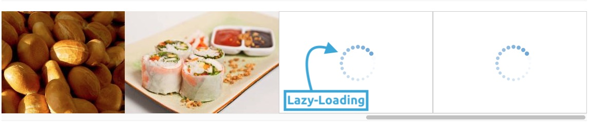

Entwurfsmuster Proxy - eine Einführung
\faicon{crosshairs} Absicht
Das Proxy-Entwurfsmuster ist ein GoF-Strukturmuster und stellt dir ein Stellvertreter-Objekt oder Platzhalter (Proxy) für ein anderes Objekt (Subjekt) zur Verfügung. Es bietet dir dadurch Kontrolle über die Objekterzeugung des Subjekts und dessen Zugriff darauf.
\faicon{thumbs-up} Motivation
Langweilig - die Erste: Sicherer Browser dank Zugriffsproxy
Stell dir mal vor, dass Du einen sicheren Browser entwickeln möchtest, welcher aus Kostengründen allerdings z.B. bereits vorhandene Browser-Schnittstellen im Hintergrund verwenden soll. Damit die Nutzer deines Browsers vor Datendiebstahl geschützt sind, soll dein Browser nur sichere HTTPS-Verbindungen erlauben und alle unsicheren HTTP-Verbindungen blockieren. Da der Quelltext deiner Engine allerdings nicht verändert werden kann/darf (z.B. aus Lizenzgründen), kannst Du die Zugriffsbeschränkung auf HTTPS nicht einfach so in das Ursprungsobjekt einfügen. Jetzt kommt dein Zugriffsproxy ins Spiel: Er kontrolliert den Zugriff auf den relevanten Teil der Browser-Schnittstelle (hier das Subjekt) und delegiert alle weiteren Methodenaufrufe direkt an das Subjekt weiter. Somit muss der Quelltext deiner geplanten Engine nicht verändert werden und alle sind glücklich!
Motiviert - die Zweite: Lazy Loading mit virtuellem Proxy
Ein weiteres sehr simples Beispiel, warum Du den Zugriff zu einem Objekt kontrollieren möchtest, ist ein virtueller Proxy zum verzögerten Laden eines Bildes (Lazy Loading). Es ist nämlich nicht immer notwendig, dass ein Bild bereits beim Instanzzieren eines Objekts in den Speicher geladen werden muss.
Stell dir vor, dass Du ganz viele Bilder auf deiner Werbe-Website deines sicheren Browsers hast. Da viele dieser Bilder im unteren unsichtbaren Bereich (“below the fold”) sind, ist es beim Laden der Website nicht sinnvoll, noch nicht sichtbare Bilder deiner Website zu laden - es reicht also, dass nur diese Bilder geladen werden, die aktuell tatsächlich im sichtbaren Bereich der Website sind. Die folgende Abbildung zeigt das Lazy-Loading anhand einer kürzlich benutzten horizontalen Scrollbalken:

Das Laden des realen Bildes (also das Subjekt) wird also in diesem Beispiel durch einen Stellvertreter vertreten (Proxy) und der Zugriff auf das tatsächliche Objekt wird soweit verzögert, bis er wirklich erst notwendig ist.
Hochmotiviert - die Dritte: Reporting der Downloads dank Remote-Proxy
Da du natürlich am Ende des Tages wissen möchtest, ob dein sicherer Browser von den Nutzer tatsächlich heruntergeladen wird, hast du dir bei der Planung der Website bereits einige Download-Statistiken überlegt:
- Datum
- Uhrzeit (in Stunden)
- Endgerätetyp
Diese Statistiken werden über die Downloads über deine Website generiert. Da du den Browser aber noch zusätzlich auf Download-Portalen anbietest, musst du diese Zahlen natürlich ebenfalls in deine Statistik miteinbeziehen. Alle Download-Portale bieten dir API-Schnittstellen an, welche ebenfalls die oben genannten Daten liefern. Mithilfe des Proxy-Objekts kannst du nun in die ursprüngliche Zugriffkontrolle des Statistik-Objekts eingreifen und z.B. die Eigenschaften des Objekts auf die von der jeweiligen API-Schnittstelle zur Verfügung gestellten Daten setzen. Weitere Methoden vom Proxies werden dann einfach an das eigentliche Reportobjekt (unserem Subjekt) delegiert.
Das architect-theme ist ein Produkt von jasonlong.